Карнавал или цирк уехал капоеристы остались!
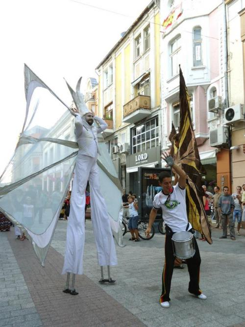
Дело было так…
Поскольку капоеристы, как всем известно, народ супер организованный ,в пятницу вечером совершенно случайно узнаю ,что в субботу к нам в Пловдив приедут ребята из Софии и часиков в шесть вечера будет уличная рода на одной из центральных площадей. Ну сообственно решила не пропускать это событие и часиков в пять двинулась по центральной пешеходной улице к месту события. Еще по пути мне показалось, что как-то слишком много в этот раз людей свободных профессий – музыкантов, клоунов, жанглеров 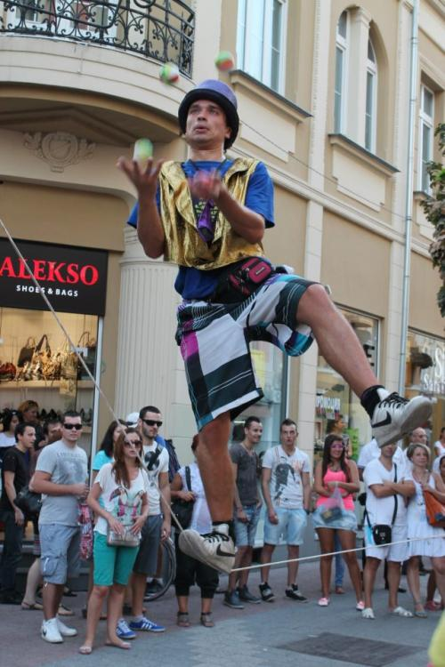
(эта улица что-то вроде арбата, так что в принципе присутствие людей творческих, не есть, что-то из ряда вон выходящее). В какой-то мамент услышала знакомые звуки агого, но по прибытию оказалось, что вовсе это не рода а собственно вот… 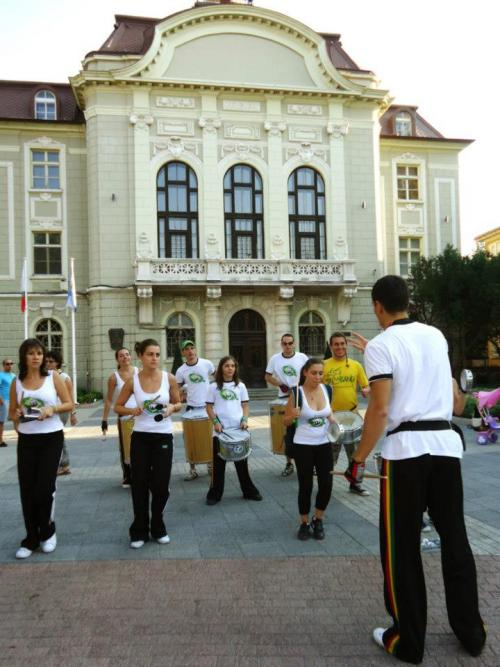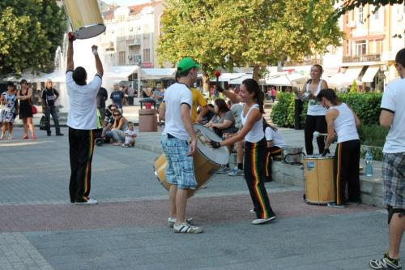
Батукада.
Честно признаюсь как именно далжно все это звучать я не очень себе представляю, но то что играли ребята очень понравилось, я бы даже сказала вшторило :)
Ну в общем подхожу к тренеру говорю,-ну что играть-то будем? Он отвечает, — нууууу, посмотрим… ребята вообще-то не за тем приехали. Короче логического конца у разговора не было, так что сижу слушаю пританцовываю – кайфую. 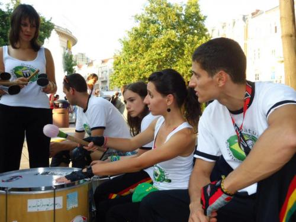
И вот к шести к нам начинают подтягиваться все те замечательные цыркачи
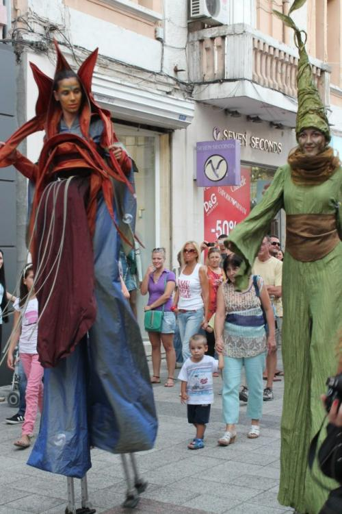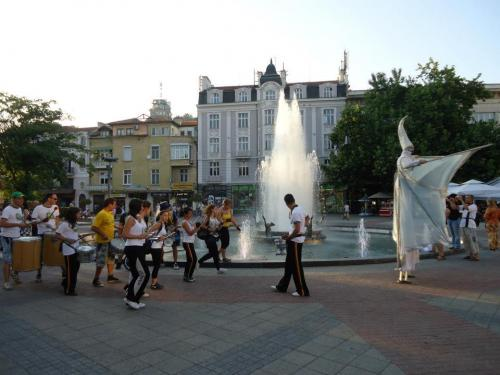
и тут становитсь ясно зачем собственно ребята приехали.
Мини бразильский карновал в центре пловдива
Ну и под конец все таки поиграли на радость публике и себе в кайф.
Вот такой карнавальчик :)
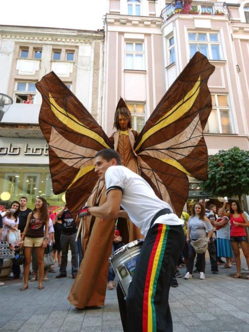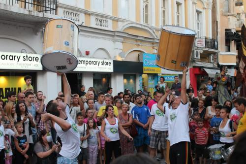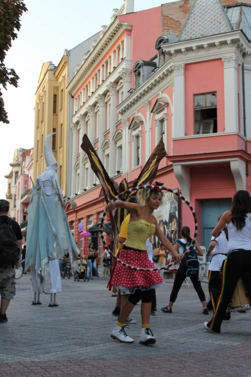
Очень понравилось, всем спасибо!
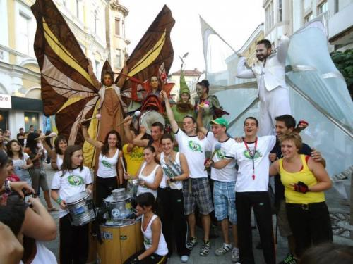